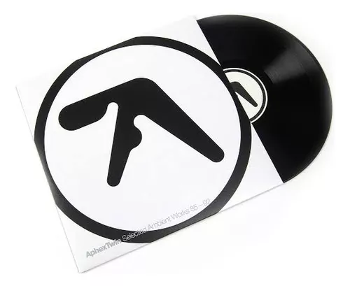

Aphex Twin
Aphex Twin

Richard David James, conhecido artisticamente como Aphex Twin, é uma figura seminal na música eletrônica, reconhecido por sua abordagem inovadora e experimental. Nascido em 18 de agosto de 1971, em Limerick, Irlanda, e criado na Inglaterra, James começou a produzir música ainda jovem. Sua paixão por sons não convencionais e a exploração de tecnologias de áudio o levaram a criar faixas que desafiavam as normas da época, misturando elementos de ambient, techno, IDM (Intelligent Dance Music) e até mesmo música clássica.
Ao longo de sua carreira, Aphex Twin lançou uma série de álbuns aclamados, como "Selected Ambient Works 85-92" e "Richard D. James Album". Esses trabalhos não apenas definiram o gênero, mas também influenciaram uma geração de produtores e músicos. James é conhecido por suas composições complexas e ricas em texturas, que muitas vezes incorporam batidas quebradas e melodias etéreas. Sua capacidade de transitar entre estilos e sua busca incessante por inovação o tornaram um ícone cult entre os amantes da música eletrônica.

Além de sua música, Aphex Twin também é famoso por sua estética visual peculiar e seu senso de humor subversivo. Os videoclipes e capas de seus álbuns frequentemente desafiam as expectativas, criando uma identidade visual única que complementa seu som. Com um legado que continua a crescer, Richard D. James permanece uma figura enigmática e influente, provando que a música eletrônica é um campo vasto e cheio de possibilidades criativas.